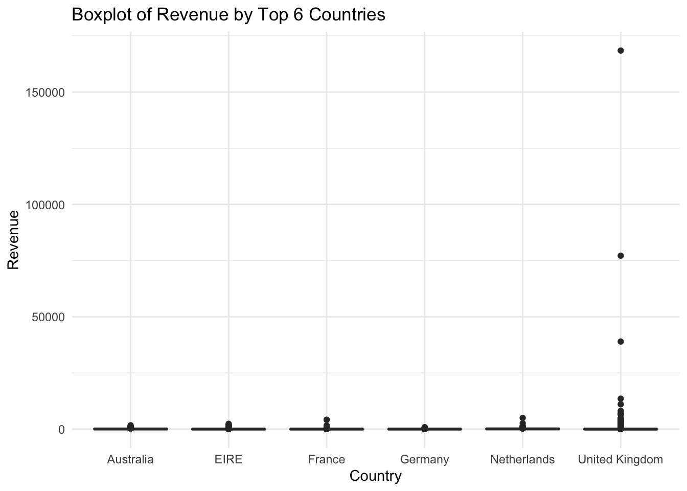
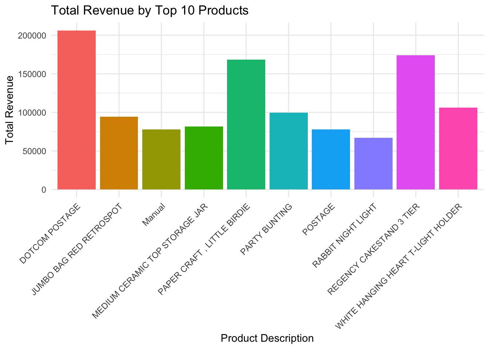
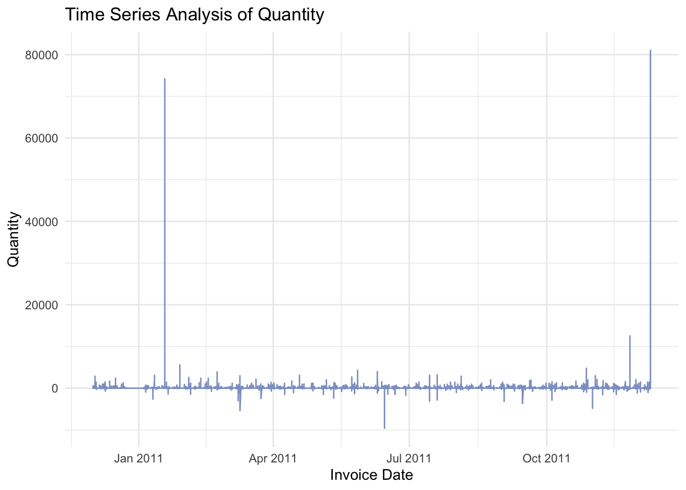
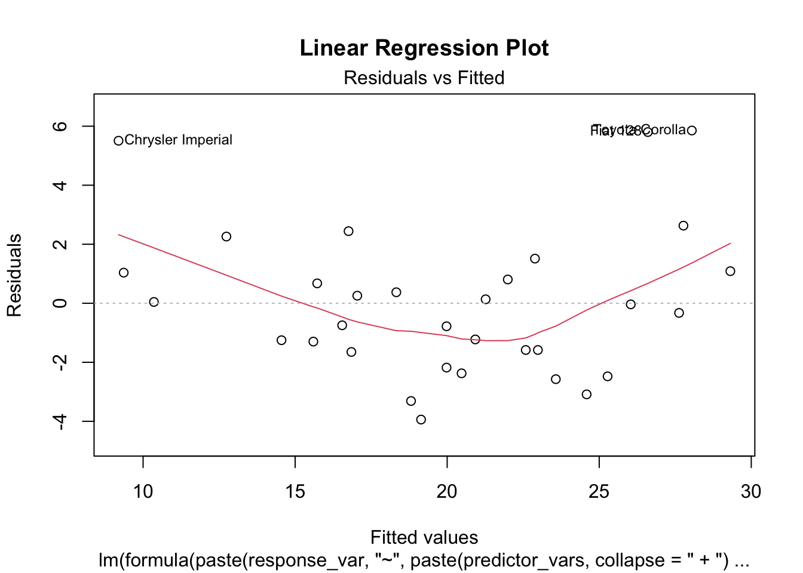
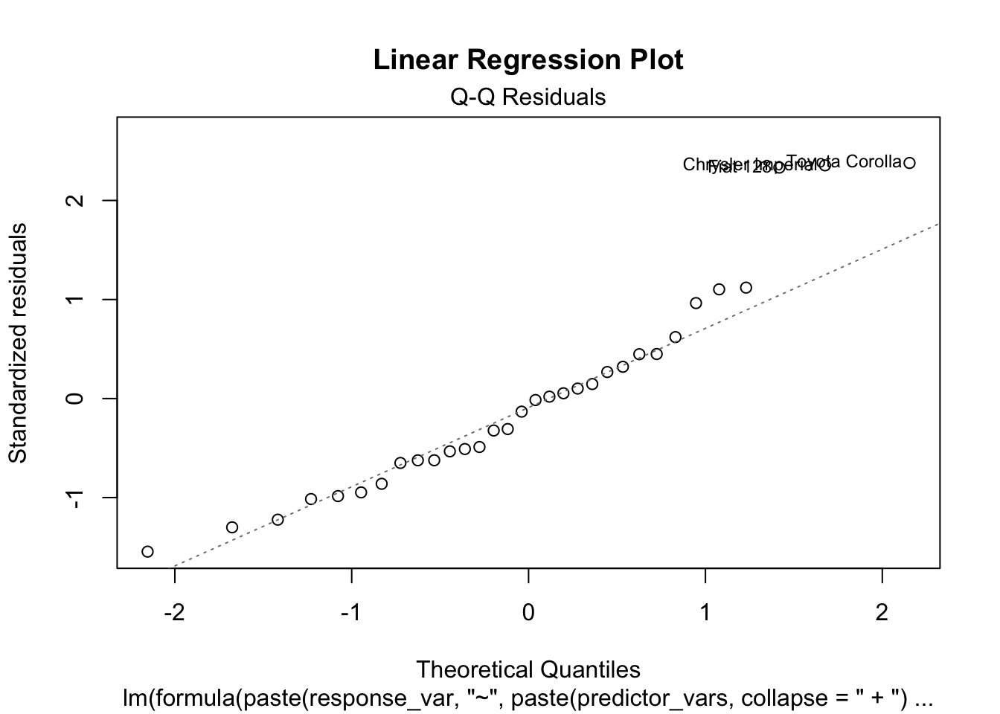
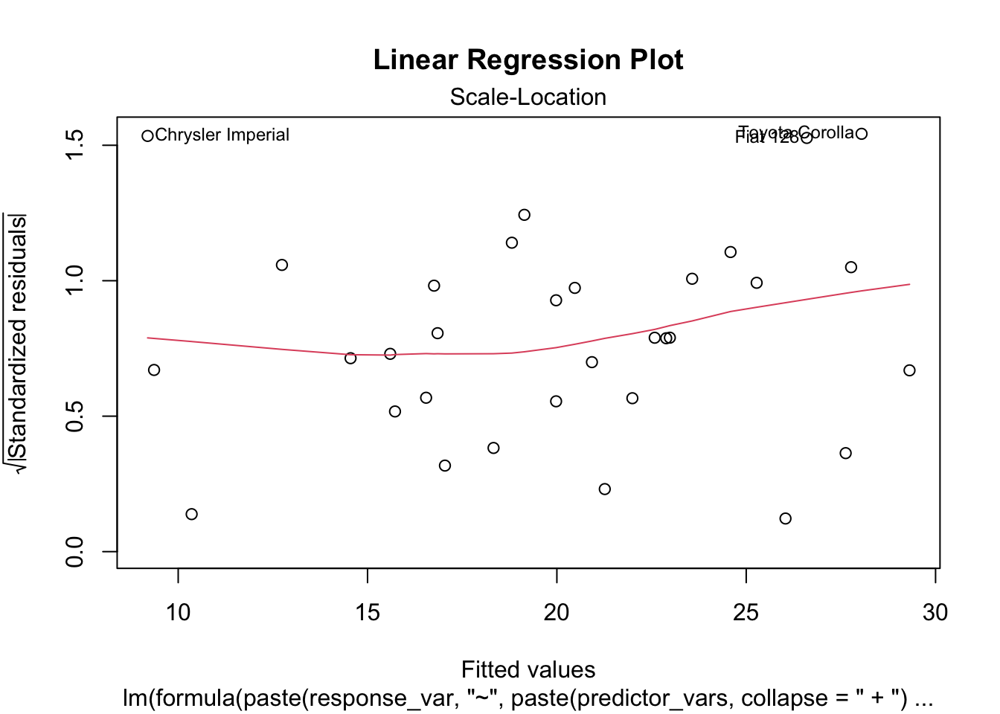
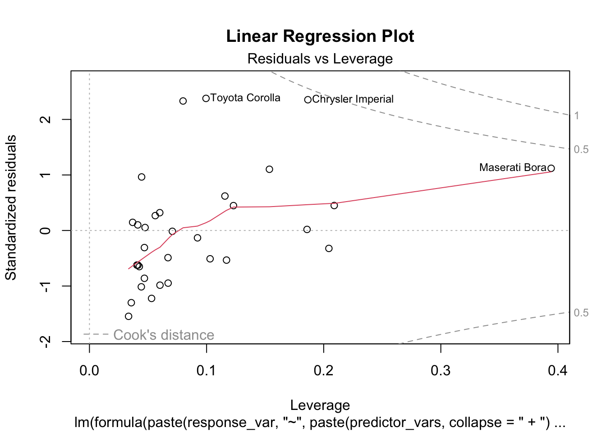

STAT30340 Data Programming with R - Final Project By Dev Walia (23205184)
Part 1: Analysis
This task involves finding a dataset, that contains a mix of categorical (factors) and numerical variables. The task is to complete an analysis and write a report using Quarto on the data. The analysis of the data should involve the use of graphical summaries, tables and numerical summaries of the data.
Data Set Online Site: https://archive.ics.uci.edu/dataset/352/online+retail
I have also attached the data set file with my code.
# Load librarieslibrary(readxl)library(tidyverse)
── Attaching core tidyverse packages ──────────────────────── tidyverse 2.0.0 ──
✔ dplyr 1.1.3 ✔ readr 2.1.4
✔ forcats 1.0.0 ✔ stringr 1.5.0
✔ ggplot2 3.4.3 ✔ tibble 3.2.1
✔ lubridate 1.9.2 ✔ tidyr 1.3.0
✔ purrr 1.0.2
── Conflicts ────────────────────────────────────────── tidyverse_conflicts() ──
✖ dplyr::filter() masks stats::filter()
✖ dplyr::lag() masks stats::lag()
ℹ Use the conflicted package (<http://conflicted.r-lib.org/>) to force all conflicts to become errors
library(ggplot2)library(reshape2)# Used for reshaping data (melt function)
Attaching package: 'reshape2'
The following object is masked from 'package:tidyr':
smiths
library(dplyr)library(lubridate)# Used for working with dates and timeslibrary(tidyverse)
1. Loading & Exploring Data Set :-
Loading the “Online_Retail.xlsx” dataset which I found onine and will start exploring it:
# Load the datasetdata <-read_excel("Online_Retail.xlsx")head(data)
# A tibble: 6 × 8
InvoiceNo StockCode Description Quantity InvoiceDate UnitPrice
<chr> <chr> <chr> <dbl> <dttm> <dbl>
1 536365 85123A WHITE HANGING HEAR… 6 2010-12-01 08:26:00 2.55
2 536365 71053 WHITE METAL LANTERN 6 2010-12-01 08:26:00 3.39
3 536365 84406B CREAM CUPID HEARTS… 8 2010-12-01 08:26:00 2.75
4 536365 84029G KNITTED UNION FLAG… 6 2010-12-01 08:26:00 3.39
5 536365 84029E RED WOOLLY HOTTIE … 6 2010-12-01 08:26:00 3.39
6 536365 22752 SET 7 BABUSHKA NES… 2 2010-12-01 08:26:00 7.65
# ℹ 2 more variables: CustomerID <dbl>, Country <chr>
InvoiceNo StockCode Description Quantity
Length:541909 Length:541909 Length:541909 Min. :-80995.00
Class :character Class :character Class :character 1st Qu.: 1.00
Mode :character Mode :character Mode :character Median : 3.00
Mean : 9.55
3rd Qu.: 10.00
Max. : 80995.00
InvoiceDate UnitPrice CustomerID
Min. :2010-12-01 08:26:00.00 Min. :-11062.06 Min. :12346
1st Qu.:2011-03-28 11:34:00.00 1st Qu.: 1.25 1st Qu.:13953
Median :2011-07-19 17:17:00.00 Median : 2.08 Median :15152
Mean :2011-07-04 13:34:57.16 Mean : 4.61 Mean :15288
3rd Qu.:2011-10-19 11:27:00.00 3rd Qu.: 4.13 3rd Qu.:16791
Max. :2011-12-09 12:50:00.00 Max. : 38970.00 Max. :18287
NA's :135080
Country
Length:541909
Class :character
Mode :character
Checking the Data shape (rows and columns):
# Checking data shapecat("Number of rows:", nrow(data), "\n")
Number of rows: 541909
cat("Number of columns:", ncol(data), "\n")
Number of columns: 8
Checking for any duplicate row:
# Check for duplicatesduplicates <- data[duplicated(data), ]cat("Number of duplicate rows:", nrow(duplicates), "\n")
Number of duplicate rows: 5268
Now we can see our data set which we found online fulfill the criteria specified in the guidelines. Let’s break it down:
Categorical Variables:
InvoiceNo: An invoice number, represented by a 6-digit integral code assigned uniquely to each transaction. If the code begins with the letter ‘c’, it indicates a cancellation.
StockCode: A product (item) code, a 5-digit integral number assigned uniquely to each distinct product.
Description: The name of the product (item). This field is nominal.
CustomerID: Customer number, a 5-digit integral code assigned uniquely to each customer. This field is categorical.
Numerical Variables:
Quantity: The quantity of each product (item) per transaction, represented as a numeric value.
InvoiceDate: Date and time of the invoice, represented as a numeric value. It indicates the day and time when each transaction occurred.
UnitPrice: The unit price of the product, represented as a numeric value in sterling.
Other:
Country: The name of the country where each customer resides. This field is categorical.
2. Data Cleaning & EDA :-
# Checking for duplicates if any present# Print shape before dropping duplicatescat("Shape before dropping duplicates: ", nrow(data), " rows and ", ncol(data), " columns\n")
Shape before dropping duplicates: 541909 rows and 8 columns
# Drop duplicate rowsdata <- data[!duplicated(data), ]# Print shape after dropping duplicatescat("Shape after dropping duplicates: ", nrow(data), " rows and ", ncol(data), " columns\n")
Shape after dropping duplicates: 536641 rows and 8 columns
Note: 5268 duplicate rows dropped.
Checking Data Shape and Unique Values in different columns:
# Checking Data Shapecat("Data Shape: ", nrow(data), " rows and ", ncol(data), " columns\n")
Data Shape: 536641 rows and 8 columns
# Checking Unique Values in Different Columnscolumns_of_interest <-c("InvoiceNo", "StockCode", "InvoiceDate", "CustomerID", "Country")for (col in columns_of_interest) {cat("Unique Values for ", col, " - ", length(unique(data[, col])), "\n")}
Unique Values for InvoiceNo - 1
Unique Values for StockCode - 1
Unique Values for InvoiceDate - 1
Unique Values for CustomerID - 1
Unique Values for Country - 1
# Checking Nulls in CustomerIDcat("Number of nulls in CustomerID: ", sum(is.na(data$CustomerID)), "\n")
Number of nulls in CustomerID: 135037
percentage_missing <-round(sum(is.na(data$CustomerID)) *100/nrow(data), 2)cat("Percentage of customers missing: ", percentage_missing, "%\n")
Percentage of customers missing: 25.16 %
Verify whether there are instances where the InvoiceNo is associated with a null CustomerID and whether there are available CustomerID values for filling those nulls. An empty data frame is returned, indicating no such cases. The code snippet identifies unique InvoiceNo values with null CustomerID and checks if they exist in the non-null CustomerID data frame:
# Check if InvoiceNo for Null CustomerID existsnull_id_invoices <-unique(data$InvoiceNo[is.na(data$CustomerID)])cat("Invoices count with Null CustomerID: ", length(null_id_invoices), "\n")
Invoices count with Null CustomerID: 3710
# Check if InvoiceNo in Null CustomerID dataframe exists in Non-Null CustomerID Dataframenon_null_customers <- data[!is.na(data$CustomerID), ]invoices_in_non_null <- non_null_customers[non_null_customers$InvoiceNo %in% null_id_invoices, ]# Print the resulting dataframeprint(invoices_in_non_null)
We can colnclude that, No such cases present as empty dataframe is returned.
Note: Given the absence of customer IDs, it is presumed that these orders were not placed by customers already present in the dataset, as those customers already have assigned IDs. To avoid distorting insights derived from the data, the decision is made not to assign these orders to existing customers. Instead of removing rows with null customer IDs, which constitutes approximately 25% of the data, the approach is to assign a unique customer ID to each order based on the `InvoiceNo`. This will create a distinct customer for each unique order.
Verify whether each `InvoiceNo` has a distinct mapping with `CustomerID`, allowing the assignment of each `InvoiceNo` associated with a null `CustomerID` to be treated as a new customer:
# Check if InvoiceNo has a unique mapping with CustomerIDinvoice_customer_mapping <- data %>%group_by(InvoiceNo) %>%summarise(nunique =n_distinct(CustomerID)) %>%arrange(desc(nunique)) %>%head(5)print(invoice_customer_mapping)
After sorting in descending order, the data indicates that each `InvoiceNo` is associated with a maximum of 1 customer.
Now, the task is to create a new column named ‘NewID’ and assign it to the `InvoiceNo` wherever `CustomerID` is null:
# Create a new column 'NewID' in the datasetdata$NewID <- data$CustomerIDdata$NewID[is.na(data$CustomerID)] <- data$InvoiceNo[is.na(data$CustomerID)]# Remove non-digit characters from the 'NewID' columndata$NewID <-gsub("\\D+", "", as.character(data$NewID))# Convert 'NewID' to integerdata$NewID <-as.integer(data$NewID)# Check for common values between existing customer IDs and new IDscustomer_count <-length(unique(data$CustomerID))null_invoice_count <-length(unique(data$InvoiceNo[is.na(data$CustomerID)]))new_id_count <-length(unique(data$NewID))cat("Number of Customers:", customer_count, "\n")
Number of Customers: 4373
cat("Number of Orders where CustomerID is Null:", null_invoice_count, "\n")
Number of Orders where CustomerID is Null: 3710
cat("Total Number of Customers and Orders where CustomerID is Null:", customer_count + null_invoice_count, "\n")
Total Number of Customers and Orders where CustomerID is Null: 8083
cat("Number of New IDs:", new_id_count, "\n")
Number of New IDs: 8082
As the counts are equal, it indicates that distinct NewIDs were assigned to all unique orders lacking a customer ID, ensuring the absence of duplicates.
Now, the code intends to convert the ‘InvoiceDate’ column from an object type to datetime and subsequently examine the first and last dates:
# Convert 'InvoiceDate' to datetime in Rdata$InvoiceDate <-as.POSIXct(data$InvoiceDate, origin="1970-01-01")# Print minimum and maximum Invoice Dates in a human-readable formatcat("Minimum Invoice Date: ", format(min(data$InvoiceDate), "%Y-%m-%d %H:%M:%S"), "\n")
The dataset spans a year, from December 1, 2010, to December 9, 2011, offering a detailed temporal snapshot of business transactions. With precise timestamps for each invoice, the data is well-suited for uncovering temporal patterns and trends, aiding analyses such as seasonality or monthly variations. The concise one-year duration establishes a clear temporal scope for insightful time-series examinations.
Creating a column named ‘cancellations’ based on the criterion that an order is considered a cancellation if its ‘InvoiceNo’ starts with the letter ‘C’:
# Adding a 'cancellations' columndata$cancellations <-ifelse(grepl("^C", data$InvoiceNo), 1, 0)# Calculating and printing the number and percentage of cancelled products datatotal_data <-nrow(data)cancelled_data <-sum(data$cancellations ==1)cat("Number of cancelled products data: ", cancelled_data, cancelled_data *100/ total_data, "\n")
Number of cancelled products data: 9251 1.723871
# Printing descriptive statistics for cancelled products datacat("Summary statistics for cancelled products data:\n")
Min. 1st Qu. Median Mean 3rd Qu. Max.
-80995.00 -6.00 -2.00 -29.79 -1.00 -1.00
# Removing cancellations since they have negative quantities and make up only ~2% of datadata <- data[data$cancellations ==0, ]
This indicates that the quantity becomes negative when an order is canceled. The decision is made to exclude cancellation data from the dataset, given that cancellations constitute only a small portion, approximately 2%, of the entire dataset.
3. Numerical Analysis for Unit Price:
# Print minimum and maximum UnitPricecat("Minimum UnitPrice: ", min(data$UnitPrice), "\n")
# Display summary statistics for UnitPriceprint(summary(data$UnitPrice))
Min. 1st Qu. Median Mean 3rd Qu. Max.
-11062.060 1.250 2.080 3.862 4.130 13541.330
The dataset’s unit prices exhibit a wide range, from a minimum of -11062.06 to a maximum of 13541.33. The distribution is positively skewed, with a mean unit price of 3.862. Most prices fall within the range of 1.250 (1st quartile) to 4.130 (3rd quartile). The presence of negative unit prices suggests anomalies or possibly refunds, warranting further investigation.
Filtering the Data (Checking where the Unit Price is less than zero):
# Filter rows where UnitPrice is less than 0negative_unit_price_data <- data[data$UnitPrice <0, ]# Display the filtered dataprint(negative_unit_price_data)
# A tibble: 2 × 10
InvoiceNo StockCode Description Quantity InvoiceDate UnitPrice
<chr> <chr> <chr> <dbl> <dttm> <dbl>
1 A563186 B Adjust bad debt 1 2011-08-12 14:51:00 -11062.
2 A563187 B Adjust bad debt 1 2011-08-12 14:52:00 -11062.
# ℹ 4 more variables: CustomerID <dbl>, Country <chr>, NewID <int>,
# cancellations <dbl>
Removing these two cases where UnitPrice is less than 0:
# Filter rows where UnitPrice is greater than or equal to 0data <- data[data$UnitPrice >=0, ]
Calculating all the rows where Price == 0:
# Calculate the percentage of data with Price = 0percentage_zero_price <-round(sum(data$UnitPrice ==0) *100/nrow(data), 2)cat("% of data with Price = 0: ", percentage_zero_price, "%\n")
% of data with Price = 0: 0.48 %
# Print the count of unique Customer ID values where UnitPrice is 0unique_customer_ids <-unique(data[data$UnitPrice ==0, ]$CustomerID)cat("Count of unique Customer ID values: ", length(unique_customer_ids), "\n")
Count of unique Customer ID values: 32
# Display the first few rows where UnitPrice is 0 and CustomerID is not nullprint(data[data$UnitPrice ==0&!is.na(data$CustomerID), ])
# Drop cases where UnitPrice is equal to 0data_filtered <- data[data$UnitPrice >0, ]# Display descriptive statistics for UnitPriceprint(summary(data_filtered$UnitPrice))
Min. 1st Qu. Median Mean 3rd Qu. Max.
0.001 1.250 2.080 3.923 4.130 13541.330
# Print minimum and maximum Quantitycat("Minimum Quantity: ", min(data_filtered$Quantity), "\n")
# Display descriptive statistics for Quantityprint(summary(data_filtered$Quantity))
Min. 1st Qu. Median Mean 3rd Qu. Max.
1.00 1.00 4.00 10.62 11.00 80995.00
The dataset’s quantity values vary widely, ranging from a minimum of 1 to an unusually high maximum of 80995. The distribution is positively skewed, as indicated by a mean quantity of 10.62. The majority of transactions fall within the lower quartiles, with the 1st quartile at 1.00 and the 3rd quartile at 11.00. The presence of an exceptionally high maximum value, 80995, suggests potential outliers or bulk purchases, highlighting the need for further investigation into these instances.
Correlation Analysis between Quantity & Unit Price:
correlation_matrix <-cor(data[, c("Quantity", "UnitPrice")], use ="complete.obs")print(correlation_matrix)
# Interpretation of correlationcat("Correlation between Quantity and UnitPrice:", correlation_matrix[1, 2], "\n")
Correlation between Quantity and UnitPrice: -0.003476562
cat("Interpretation: There is a negative correlation between Quantity and UnitPrice, suggesting that as the quantity increases, the unit price tends to decrease.")
Interpretation: There is a negative correlation between Quantity and UnitPrice, suggesting that as the quantity increases, the unit price tends to decrease.
The correlation analysis reveals a negligible negative correlation coefficient of approximately -0.0035 between Quantity and UnitPrice. This suggests a minimal linear relationship between the two variables. The interpretation indicates that, on average, as the quantity of products increases, there is a slight tendency for the unit price to decrease. However, the correlation is close to zero, implying that the relationship is weak and not practically significant. This insight can guide further investigation into the factors influencing the pricing strategy or customer behavior with varying quantities.
4. Graphical Summary:
Boxplot of Revenue by the top 6 countries:
# Selecting the top 6 countries by total revenuetop_countries <- data %>%group_by(Country) %>%summarise(Total_Revenue =sum(UnitPrice * Quantity)) %>%arrange(desc(Total_Revenue)) %>%head(6)# Filtering data for the top 6 countriesdata_top6 <- data[data$Country %in% top_countries$Country, ]# Boxplot of Revenue by the top 6 countriesggplot(data_top6, aes(x = Country, y = UnitPrice * Quantity, fill = Country)) +geom_boxplot() +labs(title ="Boxplot of Revenue by Top 6 Countries",x ="Country",y ="Revenue") +theme_minimal() +theme(legend.position ="none")

The boxplot of revenue by the top 6 countries (United Kingdom, Netherlands, Germany, France, EIRE, and Australia) provides a succinct visual summary of the distribution of total revenue generated from product sales in each country. Here are the key findings:
United Kingdom Dominance: The plot underscores the dominance of the United Kingdom in terms of total revenue, as indicated by the wider interquartile range and potential outliers. The box for the UK is generally larger and spans a higher range of revenue values compared to the other countries.
Variability Across Countries: The variability in revenue distribution is visually apparent, with each country exhibiting a distinct boxplot shape. This suggests variations in purchasing behaviors, market sizes, or product preferences among the top 6 countries.
Outliers Detection: Outliers, represented by points outside the whiskers of the boxplots, may signify exceptional transactions or unique purchasing patterns. Outliers in the UK, for instance, could indicate large transactions contributing significantly to total revenue.
In summary, this boxplot effectively communicates the revenue distribution and highlights the prominence of the United Kingdom within the top 6 countries, providing valuable insights for strategic decision-making.
The histograms for the `InvoiceDate` variable reveal insightful patterns in the temporal distribution of transactions. Here are key findings:
Temporal Concentrations: Peaks in the histograms indicate periods of heightened transactional activity. These concentration points correspond to Dec 2011 where frequency is above 4000.
Temporal Trends: The overall shape of the histograms may unveil temporal trends, such as seasonality or recurring patterns. Observing fluctuations in frequency over time provides valuable insights into the temporal dynamics of the business. Lowest drop in Jan 2011.
Distribution Spread: Examining the spread of the histograms helps gauge the variability in transactional frequency. A wider spread may indicate a more evenly distributed temporal presence.
In essence, these histograms serve as a visual exploration of the temporal landscape within the dataset, offering analysts a nuanced understanding of when transactions tend to occur more frequently, less frequently, or exhibit distinct patterns over time.
Revenue Distribution by Product Description:
# Top 10 product descriptions by total revenuetop_products <- data_filtered %>%group_by(Description) %>%summarise(Total_Revenue =sum(UnitPrice * Quantity)) %>%arrange(desc(Total_Revenue)) %>%head(10)# Filtering data for the top 10 productsdata_top_products <- data_filtered[data_filtered$Description %in% top_products$Description, ]# Bar plot of Total Revenue by Product Descriptionggplot(top_products, aes(x = Description, y = Total_Revenue, fill = Description)) +geom_bar(stat ="identity") +labs(title ="Total Revenue by Top 10 Products",x ="Product Description",y ="Total Revenue") +theme_minimal() +theme(legend.position ="none") +theme(axis.text.x =element_text(angle =45, hjust =1))

Findings:
The boxplot visually compares the revenue distribution for the top 10 products, providing insights into the variability of sales. Analyzing top revenue generators can inform understanding of customer preferences and guide future product offerings or promotions.
Products Dotcom Postage, Cakestand and Paper Craft, Little Birdge are standout performers, contributing significantly to total revenue. Notable variations in revenue exist among the top 10 products, offering insights for strategic decision-making.
Products with lower revenue present opportunities for targeted improvements, potentially through marketing initiatives. Assess seasonal trends to optimize strategies and inventory management throughout the year.
Time Series Analysis for the Invoice Data:
# Time Series Analysisdata$InvoiceDate <-as.POSIXct(data$InvoiceDate, origin ="1970-01-01", tz ="UTC")ggplot(data, aes(x = InvoiceDate, y = Quantity)) +geom_line(color ="#8da0cb") +labs(title ="Time Series Analysis of Quantity",x ="Invoice Date",y ="Quantity") +theme_minimal()

The time series analysis of quantity over the dataset’s timeline reveals dynamic patterns in transactional quantities. The line plot depicts fluctuations in quantities over time, providing insights into trends and variations. Peaks and troughs in the time series suggest periods of increased and decreased transactional activity, respectively. The visualization is instrumental in identifying potential seasonality, trend shifts, or notable events influencing the quantity of products transacted.
The observed spikes and fluctuations in the time series analysis of transactional quantities can be indicative of various underlying factors influencing the business. In January 2011 and October 2011, the noticeable spikes might suggest heightened purchasing activity during specific periods. These peaks could be associated with seasonal trends, promotional events, or other external factors that attract increased customer engagement and lead to a surge in transaction quantities.
On the other hand, the negative spikes around June 2011 and April 2011 could signal periods of reduced transactional activity or even instances of product returns or cancellations. A negative spike typically implies a decrease in the quantity of products transacted, possibly due to factors such as economic conditions, operational challenges, or specific events impacting customer behavior negatively.
FINAL FINDINGS:
In conclusion, the analysis of the online retail dataset uncovered valuable insights into the company’s operations and customer behavior. The dataset spans a year, from December 1, 2010, to December 9, 2011, providing a detailed temporal snapshot of business transactions. Notably, the dominance of the United Kingdom in terms of total revenue was evident, with wider interquartile ranges and potential outliers highlighting the UK’s significant contribution. The scatter plot of Quantity vs UnitPrice for the top 6 countries revealed diverse purchasing patterns, while the time series analysis showcased dynamic fluctuations in transactional quantities, offering a comprehensive view of temporal trends.
Furthermore, the exploratory data analysis addressed data quality concerns, including the handling of cancellations and the assignment of unique customer IDs to orders with null IDs. The removal of duplicates, thorough data cleaning, and the exclusion of cancellations with negative quantities ensured the integrity of subsequent analyses. The identification of outliers, such as exceptionally high quantities and negative unit prices, prompted further investigation into potential anomalies or bulk purchases. Overall, this analysis equips stakeholders with actionable insights to inform strategic decision-making and improve business performance.
This task involves finding an existing R package, that we didn’t use in the course, and write a report demonstrating its use using Quarto. The report should demonstrate some of the key functionality of the package, but doesn’t need to demonstrate all of the functions (only the main ones).
Exploring the Caret Package:
I will be using the Caret Package for this specific task with my part 1 dataset .
Purpose of the caret Package
The caret package, which stands for Classification And REgression Training, streamlines the model training process for complex regression and classification problems in R. Instead of loading all necessary packages at startup, caret loads them as needed, aiming to reduce startup time.
The package “suggests” 32 additional packages but doesn’t make them formal dependencies. If a required modeling package is missing, caret prompts the user to install it.
The caret package is a comprehensive framework for streamlining the process of building and evaluating predictive models in R.
Its primary purpose is to provide a unified interface for various machine learning algorithms, making it easier for users to train models, conduct resampling, and assess performance metrics.
Functionality Demonstration:
1. Loading Necessary Libraries and Data:
# Load necessary librarylibrary(caret)
Loading required package: lattice
Attaching package: 'caret'
The following object is masked from 'package:purrr':
lift
2. Creating a New Variable ‘TotalRevenue’
# Create a new variable 'TotalRevenue'data$TotalRevenue <- data$Quantity * data$UnitPrice
3. Data Preparation and Splitting
The following key functions from the caret package are employed:
createDataPartition: Used to efficiently split the dataset into training and testing sets, facilitating model evaluation.
# Set the seed for reproducibilityset.seed(123)# Specify the features and target variablefeatures <-c("Quantity", "UnitPrice") target_variable <-"TotalRevenue"# Create a data frame with only the selected features and targetdata_subset <- data[, c(features, target_variable), drop =FALSE]# Split the data into training and testing sets using caret function "createDataPartition"set_index <-createDataPartition(data_subset$TotalRevenue, p =0.8, list =FALSE)train_data <- data_subset[set_index, ]test_data <- data_subset[-set_index, ]
The following key functions from the caret package are employed:
train: Employed for model training, specifying a linear regression method, and incorporating cross-validation for robust performance assessment.
trainControl: Integrated as an argument within the train function to define the resampling strategy, in this case, employing a 5-fold cross-validation.
# Train the model using caret's train and trainControl functionmodel <-train( TotalRevenue ~ .,data = train_data,method ="lm", # Linear regressiontrControl =trainControl(method ="cv", number =5))
5. Summarizing Model Results
# Summarize the resultssummary(model)
Call:
lm(formula = .outcome ~ ., data = dat)
Residuals:
Min 1Q Median 3Q Max
-34159 -3 -2 3 46954
Coefficients:
Estimate Std. Error t value Pr(>|t|)
(Intercept) 0.664196 0.206700 3.213 0.00131 **
Quantity 1.500248 0.001154 1300.074 < 2e-16 ***
UnitPrice 1.056590 0.005246 201.410 < 2e-16 ***
---
Signif. codes: 0 '***' 0.001 '**' 0.01 '*' 0.05 '.' 0.1 ' ' 1
Residual standard error: 133.4 on 421909 degrees of freedom
Multiple R-squared: 0.8039, Adjusted R-squared: 0.8039
F-statistic: 8.646e+05 on 2 and 421909 DF, p-value: < 2.2e-16
6. Making Predictions and Evaluating Performance:
The following key functions from the caret package are employed:
predict: Applied to generate predictions on the test dataset using the trained linear regression model.
sqrt and mean: Employed for the calculation of the Root Mean Squared Error (RMSE), serving as a metric for evaluating the model’s predictive accuracy.
# Make predictions on the test set using caret function "predict"predictions <-predict(model, newdata = test_data)# Evaluate the model performance using caret function sqrt and meanrmse <-sqrt(mean((predictions - test_data$TotalRevenue)^2))print(paste("Root Mean Squared Error (RMSE):", rmse))
[1] "Root Mean Squared Error (RMSE): 54.7996329485646"
The Root Mean Squared Error (RMSE) obtained from the caret package is approximately 54.8, indicating the average disparity between predicted and actual Total Revenue values in the test set. A lower RMSE generally signifies better model performance, and in this context, it implies that, on average, the model’s predictions deviate by around $54.8 from the true values. The RMSE result serves as a quantitative measure of the model’s predictive accuracy, aiding in the assessment of its practical utility and guiding potential improvements for enhanced forecasting precision.
The caret package facilitates streamlined model development, offering a unified framework for various machine learning tasks, including preprocessing, training, and evaluation. Its advantage lies in providing a consistent interface across different algorithms, simplifying the model selection and tuning process, and enabling efficient comparison of multiple models.
This task is to write an R function (or set of functions) that can be used to provide a statistical analysis of interest. We will be creating the Function to perform Linear Regression analysis by fitting the model and will be creating S3 class for the results.
1. Function for Linear Regression Analysis:
The linear_regression_analysis function takes a dataset, a response variable, and predictor variables as inputs.
It checks if the required packages are installed and if the specified columns are present in the dataset.
The function then fits a linear regression model using the specified variables and returns an S3 object of class “linear_regression_result.”
# Function to perform linear regression analysislinear_regression_analysis <-function(data, response_var, predictor_vars) {# Check if the required packages are installedif (!requireNamespace("stats", quietly =TRUE)) {stop("Package 'stats' not installed. Please install it.") }# Check if the required columns are present in the datasetif (!(response_var %in%names(data) &&all(predictor_vars %in%names(data)))) {stop("Invalid column names provided.") }# Fit the linear regression model model <-lm(formula(paste(response_var, "~", paste(predictor_vars, collapse =" + "))), data)# Create an S3 class for the results result <-list(model = model,data = data,response_var = response_var,predictor_vars = predictor_vars )class(result) <-"linear_regression_result"return(result)}
2. S3 Class and Methods:
We defined an S3 class named “linear_regression_result” to encapsulate the results of the linear regression analysis.
The print, summary, and plot methods were implemented for this class to provide different perspectives on the analysis results.
# Define print method for the resultprint.linear_regression_result <-function(x, ...) {cat("Linear Regression Results Intercepts and Coefficients:\n")cat("Intercept:", coef(x$model)[1], "\n")cat("Coefficient (wt):", coef(x$model)[2], "\n")cat("Coefficient (hp):", coef(x$model)[3], "\n")}# Define summary method for the resultsummary.linear_regression_result <-function(object, ...) {cat("Summary of Linear Regression Results:\n")print(summary(object$model))}# Define plot method for the resultplot.linear_regression_result <-function(x, ...) {plot(x$model, main ="Linear Regression Plot")}
3. Example Usage:
We demonstrated the usage of the function with the mtcars dataset, predicting miles per gallon (mpg) based on vehicle weight (wt) and horsepower (hp).
The summary method provides a summary of the linear regression results.
The print method displays detailed information about the linear regression model.
The plot method generates a plot of the fitted values against the observed values.
The linear_regression_analysis function is utilized to fit a linear regression model to the specified dataset and variables.
result <-linear_regression_analysis(mtcars, "mpg", c("wt", "hp"))
The resulting object, ‘result,’ is an instance of the “linear_regression_result” class, encapsulating the model, dataset, response variable, and predictor variables. This structured approach allows for easy access to and manipulation of the linear regression results.
# Print the detailed resultsprint(result)
Linear Regression Results Intercepts and Coefficients:
Intercept: 37.22727
Coefficient (wt): -3.877831
Coefficient (hp): -0.03177295
The results are encapsulated in an S3 class, “linear_regression_result,” with print, summary, and plot methods defined for meaningful output.
# Printing the more detailed summarysummary(result)
Summary of Linear Regression Results:
Call:
lm(formula = formula(paste(response_var, "~", paste(predictor_vars,
collapse = " + "))), data = data)
Residuals:
Min 1Q Median 3Q Max
-3.941 -1.600 -0.182 1.050 5.854
Coefficients:
Estimate Std. Error t value Pr(>|t|)
(Intercept) 37.22727 1.59879 23.285 < 2e-16 ***
wt -3.87783 0.63273 -6.129 1.12e-06 ***
hp -0.03177 0.00903 -3.519 0.00145 **
---
Signif. codes: 0 '***' 0.001 '**' 0.01 '*' 0.05 '.' 0.1 ' ' 1
Residual standard error: 2.593 on 29 degrees of freedom
Multiple R-squared: 0.8268, Adjusted R-squared: 0.8148
F-statistic: 69.21 on 2 and 29 DF, p-value: 9.109e-12
The linear regression analysis indicates a strong and statistically significant model. The intercept is 37.23, and both ‘wt’ and ‘hp’ are significant predictors with coefficients of -3.88 and -0.03, respectively. The model explains approximately 83% of the variability in the response variable (‘Multiple R-squared: 0.8268’).
The F-statistic is 69.21, indicating overall statistical significance. The residual standard error is 2.59, reflecting the variability unexplained by the predictors. In summary, the model provides valuable insights into the relationship between the response variable and predictors, suggesting a robust fit and significant predictor variables.
# Plot the results of our linear regression functionplot(result)




In a nutshell the print method displays a concise summary of coefficients the linear regression results, while the summary method provides a more detailed summary. Additionally, a plot method generates a plot of the regression analysis.This task showcases a structured and modular approach to performing linear regression analysis in R, making it easy for users to understand and utilize the provided functionality. The S3 class and methods enhance the user experience by allowing for organized and specialized handling of the analysis results.
-------------------------END OF THE FINAL PROJECT (THANK YOU!!!!)--------------------------------------------------------------------